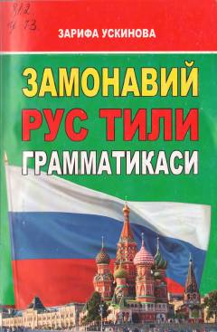

ZRRus tili grammatikasining asosiy qoidalari va qisqacha qoʻllanmasi.
Mazkur qoʻllanma zamonaviy rus tili grammatikasining asosiy qoidalarini oʻz ichiga oladi va rus tilini oʻrganuvchilar uchun moʻljallangan. Kitobda ot, sifat, fe'l va boshqa turkumlar hamda ularning tuslanishi boʻyicha qisqacha tushuntirishlar berilgan.